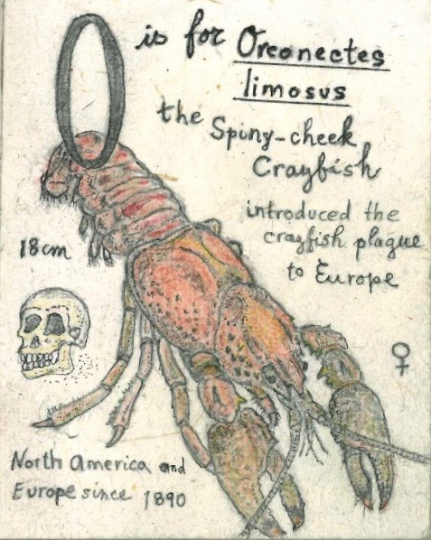
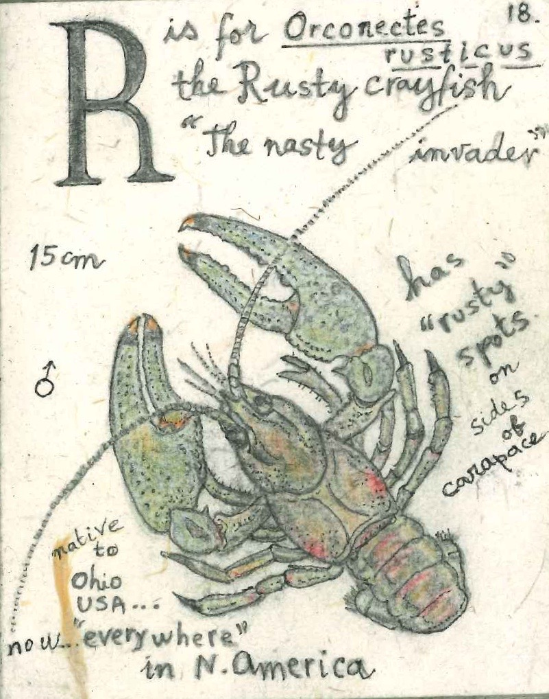

Crayfish of Canada
Welcome to our site. Here you will find photos, papers and stories about crayfish science, history and culture in Canada and around the world.
History

Unintended consequences
The spiny cheek crayfish was introduced to Europe from North America in the 1890s. It carried crayfish plague!

The traveler
The rustycrayfish is large aggressive and well travelled. This species originates in Ohio, but is now found throughout eastern North America.